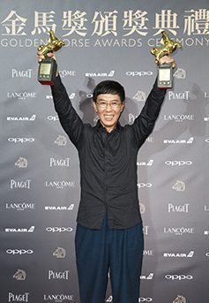
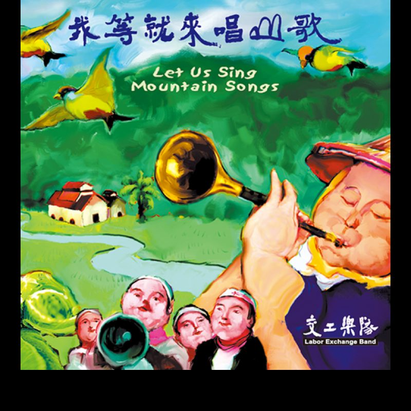

2002 年金曲奖颁奖台上，林生祥的得奖感言是：「如果交工乐队是一支麦克风，我们希望递到农民、工人面前，把我们看到的事情、听到的故事，告诉我们的社会……感谢土地伯公！」[9]这支从美浓反水库运动里长出来的乐队，把一支麦克风递给了离乡与还乡的人。
故事要从一场没打赢的仗说起。上世纪九十年代，当局计划在高雄美浓兴建水库，客家庄的农民组织起反水库运动。[8]1994 年，在淡江大学读书的美浓青年林生祥组了「观子音乐坑」，把门票收入捐给运动，唱以山歌为底、掺进西洋摇滚的客语歌——〈美浓山下〉〈反水库之歌〉在运动场合被一遍遍唱起。[8]
1998 年，交工乐队正式成军。团名「交工」取自客家农村「换工」的传统——农忙时各家互相帮工，不计报酬。[8]1999 年 4 月，第一张专辑《我等就来唱山歌》出版；次年，这张运动专辑拿下第 11 届金曲奖最佳作曲人与最佳制作人[3][11]——一支反水库的乐队，先被主流评审听见了。
2001 年 9 月，《菊花夜行军》发行。这张概念专辑写一个叫「阿成」的农村青年：离乡、失败、还乡。2002 年 5 月，它击败五月天等对手，拿下第 13 届金曲奖最佳乐团奖[2][10]；此前三个月，英国民谣权威杂志《Folk Roots》专文介绍了这支台湾乐队[2]。
巅峰处急流勇退。2003 年 9 月 1 日，交工乐队宣布解散，成员一分为二：林生祥与钟永丰带着新乐手组成「生祥与瓦窑坑3」，2005 年又以《临暗》再夺金曲奖最佳乐团[3][4]；其余成员组成「好客乐队」。[3]
此后林生祥与日本吉他手大竹研长期合作，2010 年贝斯手早川彻加入，2012 年 7 月更名「生祥乐队」，随后鼓手福岛纪明、唢呐手黄博裕加入，编制七人（含笔手钟永丰）。[6][7]「我庄三部曲」《我庄》《围庄》《野莲出庄》与《江湖卡夫卡》接连问世，《围庄》为反空污议题做了双唱片，未获唱片公司投资、靠网络募资完成，最终拿下第 28 届金曲奖评审团奖。[6][7]
林生祥同时也是电影配乐常客：《大佛普拉斯》让他拿下第 54 届金马奖原创音乐双料奖项，此后还有《阳光普照》《男人与他的海》等。[13][7]
| 成员 | 分工 |
|---|---|
| 林生祥 | 主唱、吉他、月琴、三弦[3] |
| 陈冠宇 | 贝斯、录音师[3] |
| 钟成达 | 打击乐[3] |
| 郭进财 | 唢呐[3] |
| 钟永丰 | 笔手（词）、诗人[3] |
专辑内页另载：〈风神125〉一曲中，母亲口白由曾秀梅担任。[8b]
| 成员 | 分工 |
|---|---|
| 林生祥 | 主唱、六弦月琴、电月琴、木吉他[6] |
| 大竹研（日本） | 木吉他、电吉他[6] |
| 早川彻（日本） | 电贝斯、键盘、口风琴[6] |
| 吴政君 | 打击乐器、北管乐器、二胡[6] |
| 福岛纪明（日本） | 爵士鼓[6] |
| 黄博裕 | 唢呐、管子、笛子[6] |
| 钟永丰 | 笔手、朗诵[6] |

词：钟永丰 ｜ 曲：林生祥 ｜ 主唱：林生祥 ｜ 收录《我等就来唱山歌》（1999，专辑第 2 首）｜ 全长 6:05，副题「记一位老农的心情」[16][2]
一九九九年，美浓反水库运动进入第六年。政府说水库一建美浓就变金库，农民不信，连年北上抗议。[16]这张专辑的副标就叫「美浓反水库运动音乐纪实」——这些歌本来就是在街头、在农村、在立法院抗议现场唱的。[16]〈夜行巴士〉写的正是其中一夜：一位六十出头的老农，连夜坐游览巴士北上台北，去跟政府讲他这辈子最硬的一次话。
一、它把一场运动写成了一张车票。不喊一句口号。主角是具体的人：透夜赶路、头昏脑胀、双目圆睁，看着夜色里「乌云食月一擺過一擺」（黑云掩月一次又一次），想起从前的从前。[16]宏大叙事被缩进一个困倦的老人身上——运动最真的部分不在标语里，在夜车的座椅上。
二、「水库系築得屎嘛食得」——粗话入歌的尊严。全曲落点是这句民谚式的狠话：水库若做得成，屎也食得。[16]这不是修辞，是运动中真实流传的抗辩句式——它后来直接成了专辑第 5 首歌的歌名〈水庫係築得 屎嘛食得〉[2]。庄稼人骂得越难听，说明被逼得越深。
三、烟楼录音，野地里的声音。交工把录音器材搬进美浓熏烟叶的烟楼：泥砖墙隔音差，唱到一半门外猪叫狗吠，只得重录；蒼蠅成群停在音控台上。乐评人马世芳形容这是「野地裡萌苗的錄音美學」，那声音带着潮潤溫暖的泥味。[16]那卡西乐师出身的钟成达把客家八音鼓和爵士鼓融合成独门的「达鼓」，陈冠宇改弹空心贝斯，加上郭进财的唢呐——这支乐队的音色，在华语乐队里找不出第二组。
四、重复三次的「今比日涯愛一定來去講」。从「我想去讲」到「我一定要去讲」，歌词把这句话递进了三遍——那不是修辞，是壮胆。[16]一位种了一辈子田的老人，第一次决定坐夜车进台北告状。车越往北开，天越亮，话越硬。
歌词全文（客语原文与白话对照）见 客家风情论坛〈夜行巴士〉[16]。

1. 交工乐队的「成立日」。多数媒体表述为「1998 年组成交工乐队」[6][7]；一篇客家音乐研究论文则记「交工乐队成立于 1999 年 1 月 8 日」[8]。两说并存：1998 为组队活动之年，1999-01-08 或为正式登记/成军之日，未找到可裁决的原始文件。
2. 解散时间表述。维基百科记「2003 年 9 月 1 日正式宣布解散」[3]；求真百科林生祥条目记「2003 年宣布解散」，百度百科相关表述为「2003 年，玛莎退伍……」所载时间线与此无涉。本页采用维基的精确日期。
3. 金马奖项项名。Commons 照片文件名记「林生祥获第 54 届金马原创音乐双料奖」[13]，求真百科记〈有无〉「帮他拿下两座金马奖」[7]——「双料/两座」可互证，但两项的确切奖项全名未在检索到的来源中同时列出，故本页不展开细项。
本期全部画面为真实素材，未使用 AI 生成影像；版权仍归原权利人，此处仅作非商用个人阅读之引用。
1. 林生祥 · 2012-09-01 反媒体垄断大游行（弹吉他）：Wikimedia Commons 文件页（API 限流，作者/授权号详见文件页）
2. 林生祥 · 第 54 届金马奖：Wikimedia Commons 文件页
3. 美浓桥（石猴与「美濃橋」碑）：Wikimedia Commons 文件页
4. 美浓客家文物馆（竹编装置）：Wikimedia Commons 文件页
5. 《菊花夜行军》专辑封面：生祥乐队官网 sxband.com
6. 《我庄》专辑封面：生祥乐队官网 sxband.com
核查备注：Commons 检索中曾命荷兰电音节「Mayday 2019」、美国游行花车「Mayday Parade」、阿姆斯特丹变装皇后「Diva Mayday」等同名异物照片，均已排除。